AUTH-01 · cliente
La cliente entra con su cuenta de demostración
Cuando Ana elige "Quiero una cita" Entonces ve "Hola, Ana" Y permanece en el catálogo de servicios
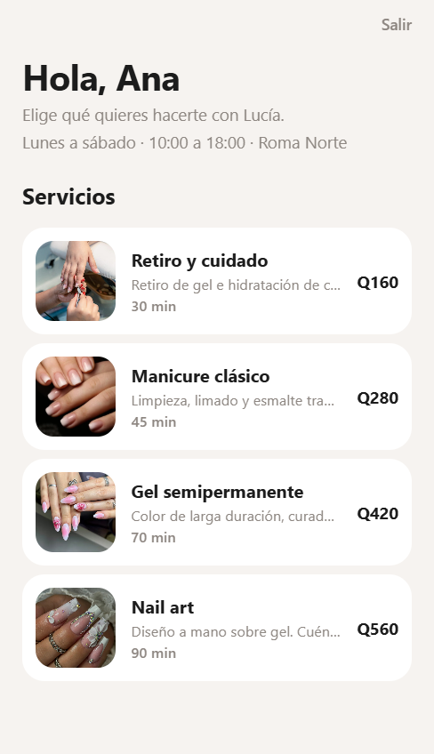
Cada escenario de docs/escenarios.feature con la pantalla que lo demuestra. La agenda vuelve al estado de demostración antes de cada caso: Sofía a las 10:00, Camila a las 16:00, Elena al día siguiente y Ana con un gel pendiente. Los precios están en quetzales.
AUTH-01 · cliente
Cuando Ana elige "Quiero una cita" Entonces ve "Hola, Ana" Y permanece en el catálogo de servicios

AUTH-02 · profesional
Cuando Lucía elige "Ver mi agenda" Entonces ve "Agenda de Lucía" Y ve las citas de Sofía, Camila, Elena y Ana
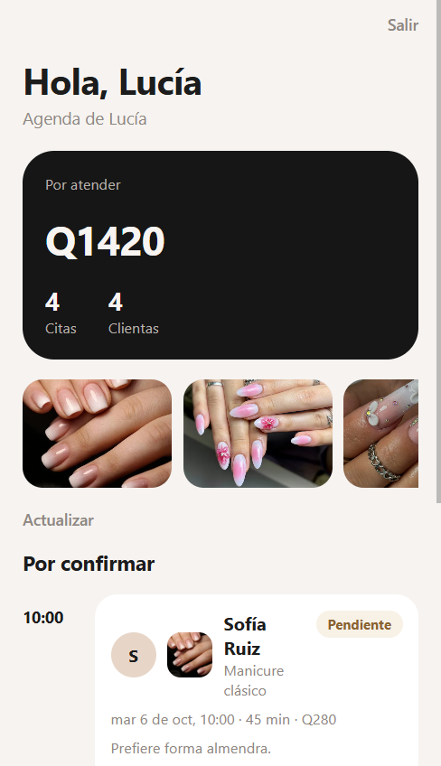
AUTH-03
Cuando alguien escribe "nadie@lumina.app" y pulsa "Entrar" Entonces ve "No encontramos una cuenta con ese correo." Y sigue en la pantalla de acceso
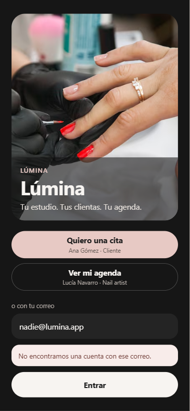
CLI-01 · cliente
Dado que Ana ha entrado Entonces ve "Manicure clásico", "Gel semipermanente", "Nail art" y "Retiro y cuidado" Y ve la duración y el precio de cada servicio Y ve que Lucía atiende de lunes a sábado, de 10:00 a 18:00

CLI-02 · cliente
Cuando abre "Manicure clásico" Y elige el primer día hábil Y elige las 11:00 Y confirma la cita Entonces ve "Cita reservada" Y al abrir "Mis citas" ve ese manicure como "Pendiente"
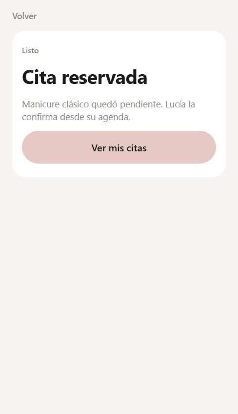
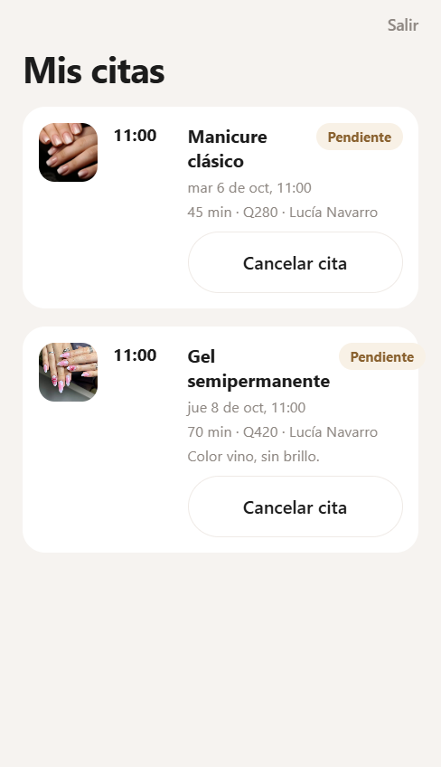
CLI-03 · cliente
Cuando abre "Manicure clásico" en el primer día hábil Y toca las 10:00 Entonces ve "Ese horario ya está ocupado." Y "Confirmar cita" permanece desactivado
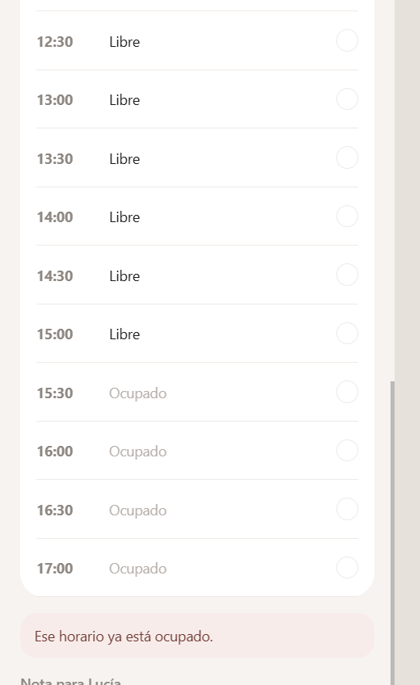
CLI-04 · cliente
Cuando abre "Mis citas" Entonces ve su "Gel semipermanente" en estado "Pendiente" Y no ve las citas de Sofía, Camila ni Elena
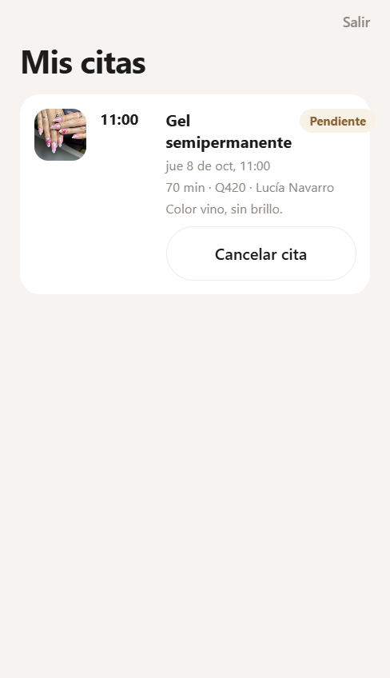
CLI-05 · cliente
Cuando cancela su gel pendiente Entonces esa cita pasa a "Cancelada" Y ya no ofrece "Cancelar cita" para esa reserva
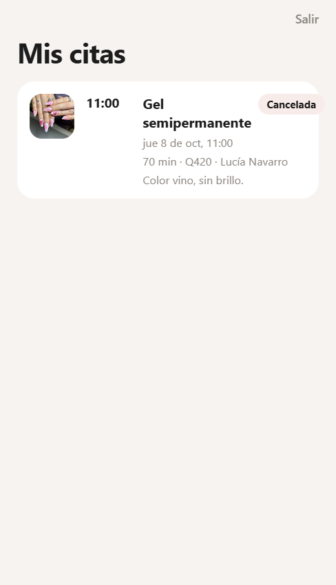
PRO-01 · profesional
Dado que Lucía ha entrado Entonces ve a Sofía Ruiz en "Por confirmar" Y ve a Camila Ortiz en "Confirmadas" Y ve a Elena Díaz y a Ana Gómez entre las pendientes

PRO-02 · profesional
Cuando confirma la cita de Sofía Ruiz Entonces esa cita pasa a "Confirmada" Y deja de mostrarse en "Por confirmar"
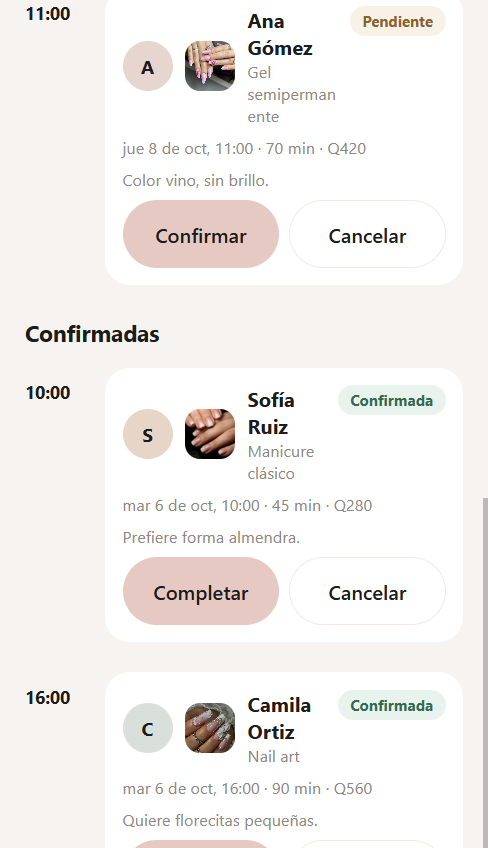
PRO-03 · profesional
Cuando marca como completada la cita de Camila Ortiz Entonces esa cita pasa a "Completada" Y aparece en "Historial"
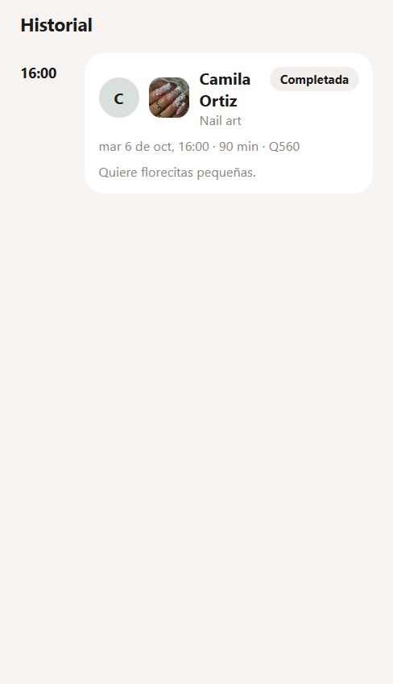
PRO-04 · profesional
Cuando cancela la cita de Elena Díaz Entonces esa cita pasa a "Cancelada" Y aparece en "Historial"
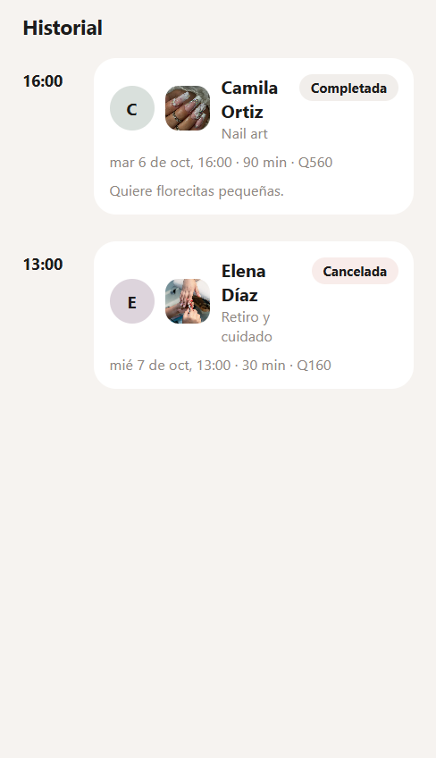